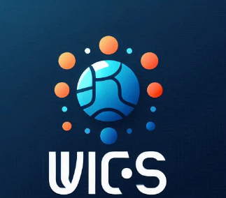

INTRODUCE UVICS PERDANA || WHAT IS UVICS?

What is UVICS?
UVICS (Unklab Virtue in Computer Science) merupakan sebuah organisasi yang dibentuk berdasarkan inisiatif mahasiswa Universitas Klabat.
Organisasi ini bertujuan untuk menjadi wadah bagi mahasiswa yang ingin menggali dan mengembangkan potensi diri mereka dalam bidang ilmu komputer.
Melalui wadah UVICS ini, mahasiswa dapat lebih mudah menemukkan tim yang punya visi untuk berprestasi bersama, dengan organisasi yang tersistem.
UVICS mendorong anggotanya untuk terus melampaui batasan diri dan mencapai prestasi bersama-sama dalam tim yang solid.
UVICS menghubungkan mahasiswa yang memiliki minat yang sama untuk berpartisipasi dalam berbagai kompetisi tingkat universitas.
Kompetisi-kompetisi tersebut meliputi Business Case Competition, Business Plan Competition, Hackathon Competition, Web Competition,
dan kompetisi-kompetisi lainnya yang relevan dengan bidang ilmu komputer. Melalui partisipasi dalam kompetisi-kompetisi ini, anggota UVICS
tidak hanya dapat mengasah kemampuan teknis dan analitis mereka, tetapi juga mengembangkan keterampilan kerja sama tim, kepemimpinan, dan inovasi.
UVICS PROGRAM
- LOMBA
Merupakan program utama UVICS untuk membangun portofolio pengalaman bersama tim dan meraih prestasi bersama,
dengan mengikuti berbagai kompetisi jenjang universitas sesuai dengan keputusan bersama tim, seperti; Bisnis plan competition,
Bisnis Case Competition, Web Development Competition, Hackathon, dll.
- KABEL (KAMAR BELAJAR)
Kegiatan belajar bersama untuk meningkatkan pengetahuan atau skill tertentu melalui sharing expert atau orang berpengalaman sesuai dengan topik yang diperlukan bersama.
UVICS CULTURE & VALUE
MOTTO: YOUR JOURNEY IS YOUR REWARD
- Value:
- Willing to Learned
- Dare to do extra
- Grow together
- Enthusiasm
- Inspired
- Culture:
- Discipline
- Active and Communicative
- Innovative
- Sharing and caring

Syarat & Ketentuan
- Mahasiswa aktif Universitas Klabat, bisa berasal dari semua prodi/ Fakultas;
- Memiliki keinginan untuk berprestasi/mengembangkan diri melalui pengalaman lomba-lomba seperti Bisnis Plan, Web Dev, Marketing Plan, Hackhaton, Dll;
- Mau berkomitmen dan bertanggung jawab nantinya ketika menjadi anggota UVICS selama 4 bulan;
- Punya keinginan untuk belajar;
- Like, Share, Komen dan tag ajak 5 teman kalian di kolom komentar postingan ini.
Benefits
- Pengalaman berorganisasi dan pengalaman lomba yang bejibun
- E-certificate bagi yang menyelesaikan tanggung jawab hingga akhir
- Mendapatkan tim yang memiliki visi dan motivasi yang sama untuk meraih pengalaman lomba
- Kesempatan mengembangkan skill: Leadership, project management, dan team work
- Akses belajar Myskill
- Voucher e-course cakap
- Rekomendasi LinkdIn
- Membangun portofolio projek dan prestasi selama kuliah
Timeline
- Pendaftaran: 4 - 14 Agustus 2024
- Pengumuman Seleksi I: 19 Agustus 2024
- Seleksi Wawancara: 21 - 23 Agustus 2024
- Pengumuman Seleksi II: 26 Agustus 2024
Link pendaftaran dan guidebook nanti tunggu sesuai timeline yaw, stay toon.
BACK